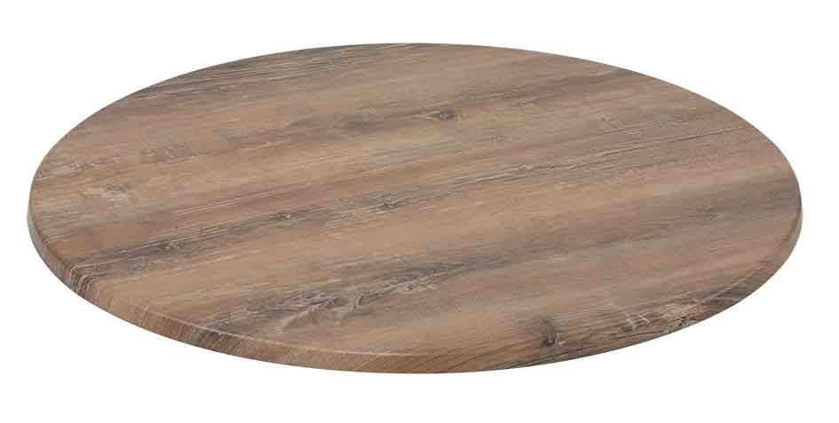

Table Top
Table Top
全天候性のオーストラリア製テーブルトップです。40年以上もの間テーブルトップや窓枠商品を制作し続ける 世界中で信頼と実績のあるメーカーです。屋外での耐用年数は仕様環境によって異なりますが2～3年が目安です。
9 Sizes
| 品番 | 重量 | 天板厚 | 上代 |
|---|---|---|---|
| 600φ | 4.0kg | Ⓐ26/Ⓑ16.5 | 20000 |
| 800φ | 7.5kg | Ⓐ26/Ⓑ18 | 26000 |
| 900φ | 9.5kg | Ⓐ26/Ⓑ18 | 34000 |
| 1,050φ | 12.0kg | Ⓐ30/Ⓑ17.5 | 45000 |
| 700×700 | 7.7kg | Ⓐ34/Ⓑ18 | 35000 |
| 800×800 | 9.8kg | Ⓐ34/Ⓑ18 | 39000 |
ほか 3 型番。詳細ページに全件あります。